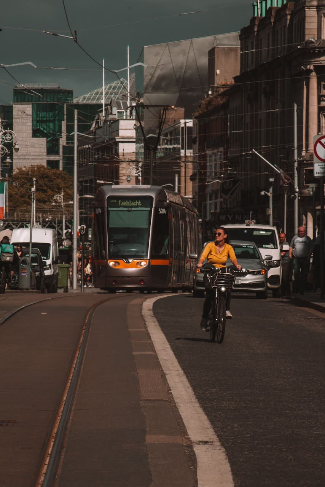
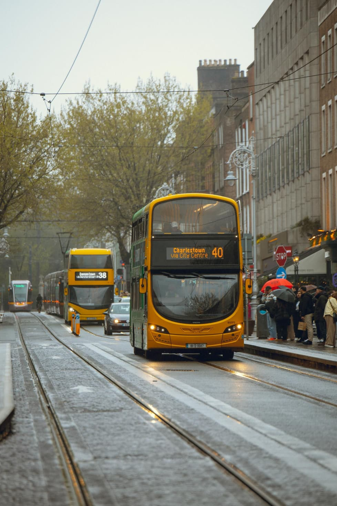
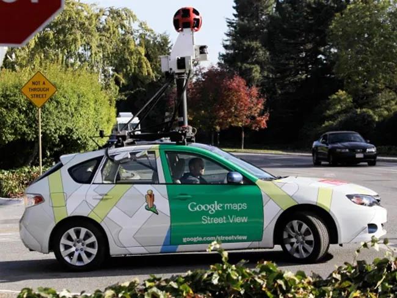

Solutions to Air Pollution in Dublin
Solutions to air pollution in Dublin include a large mix of different approaches including reduction of traffic, improvement to public transport and the technological innovation
Reduction of Traffic

Image Source: Pexels
Dublin City Council has significantly improved the city’s transport system by investing in cycling infrastructure as a sustainable alternative to car use. Developments such as dedicated bike lanes, greenways like the Grand Canal and Tolka Valley routes, expanded bike parking, and safer road features (e.g., island bus stops and cycling signals) make cycling more accessible and secure. Combined with bike-sharing schemes and journey-planning apps, these measures encourage more people to switch to cycling for daily travel. This shift reduces traffic congestion and lowers vehicle emissions, making cycling infrastructure a practical and scalable solution to urban air pollution.
Improving public transport

Image Source: Pexels
Dublin City Council highlights improving public transport by expanding and integrating services such as Metrolink, DART, BusConnects, and Luas extensions to create a more connected network. It also emphasises better access to stops, stronger links with walking and cycling, mobility hubs, and transit-oriented development around key routes and stations. Together, these measures aim to shift more journeys away from private cars, reduce congestion, and cut air pollution
Technological Innovation

Image Source: carandbike.com
Project Air View is a Dublin City Council and Google collaboration that maps air quality street by street using a Google Street View car fitted with Aclima sensors. It collected over 50 million measurements across Dublin, creating hyperlocal pollution data that shows where air quality is better or worse. The data helps the city identify pollution hotspots and supports smarter environmental, climate, and planning policies. It also promotes public awareness and can guide actions to reduce emissions and improve air quality in Dublin.